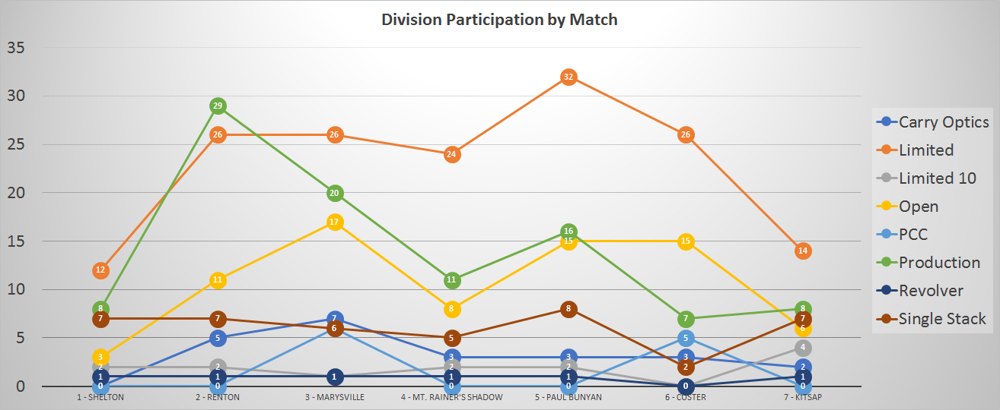
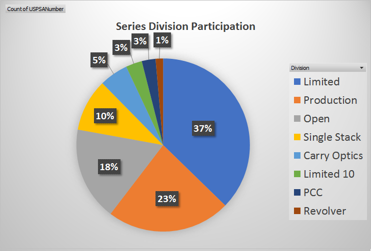
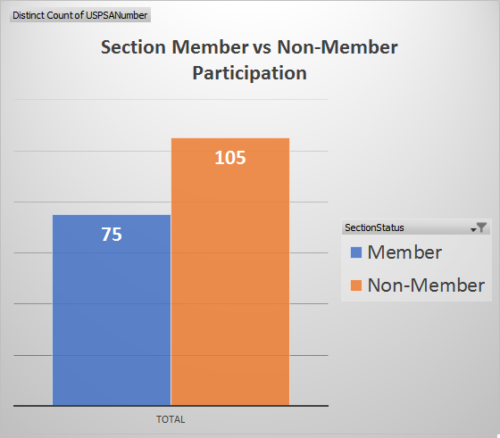
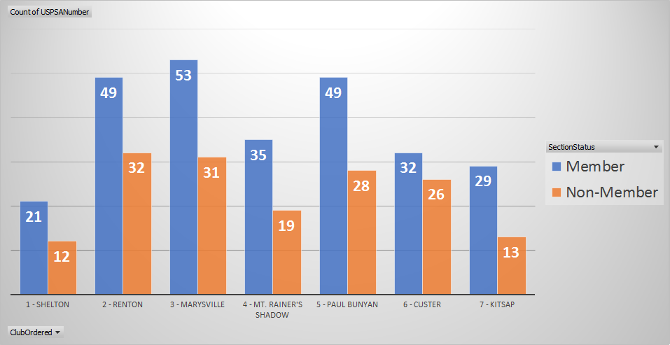
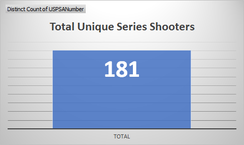
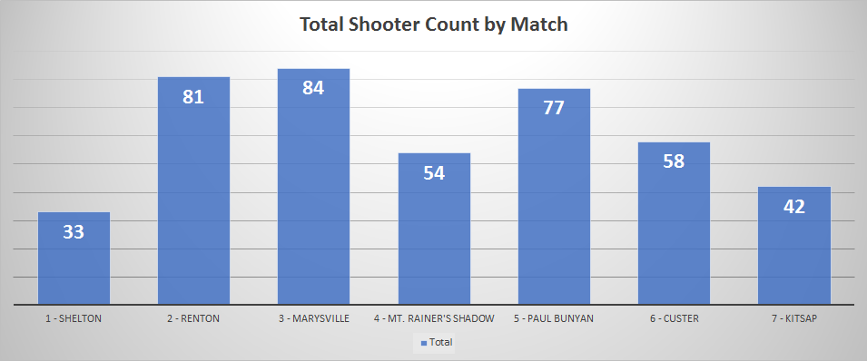

Various data points about the series match can be found below. Note: Some totals may not always add up due to blank USPSA numbers fron non-USPSA members or other data integrity issues.
This represents the number of shooters that participated in each division at each match.

This represents the percentage of participation in each division over the course of the entire series.

This represents the number of NW section members and non-members who shot at least one series match.

This represents the number of NW section members and non-members who shot at each match.

This represents the total number of shooters who shot at least one series match.

This represents the total number of shooters at each match.
